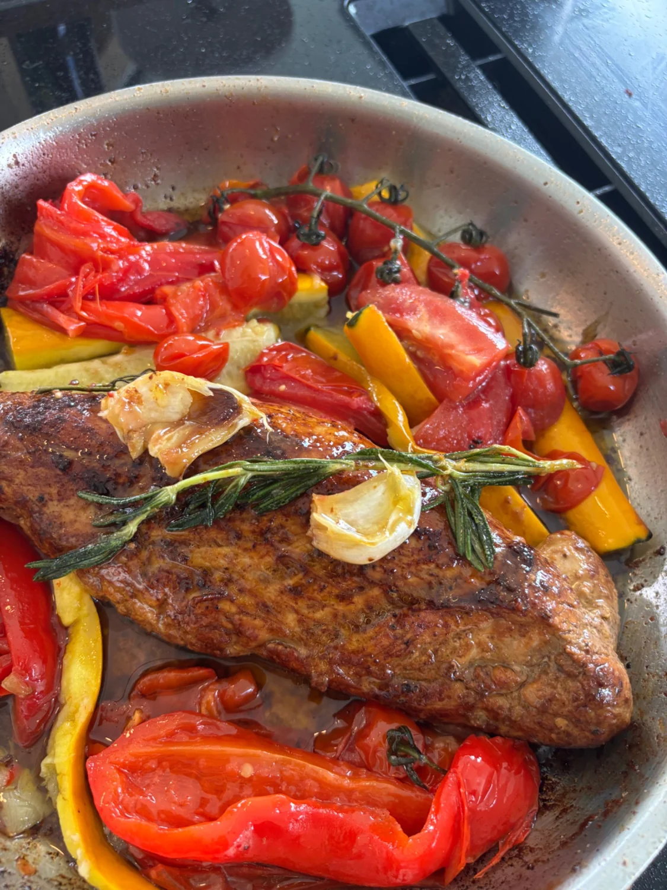

MAALTIJDEN OP MAAT
Goed eten.
Ook in een volle week.
Huisgemaakte maaltijden voor jouw gezin, afgestemd op jullie smaak en weekritme. Ik zorg voor het menu, de boodschappen en het koken, zodat jullie meer tijd overhouden voor elkaar.
Bereid in jouw keuken of bij je thuis bezorgd. We bespreken samen wat bij jullie past.
Op aanvraag · een persoonlijk voorstel
Bespreek jouw weekZo regelen we het.
Jullie week, jullie smaak
We bespreken je gezin, favoriete gerechten en hoeveel maaltijden je nodig hebt.
Een persoonlijk menu
Je ontvangt een voorstel met gerechten, een duidelijke prijs en de praktische afspraken.
Gekookt voor jullie
Ik kook bij jullie thuis of bezorg de maaltijden. Bewaren en opwarmen bespreken we vooraf.
Op aanvraag en afhankelijk van beschikbaarheid. We bespreken allergieën, dieetwensen en de invulling voordat je beslist.
Laten we iets
lekkers plannen.
Een idee of al concrete plannen? Vertel het me. Je krijgt binnen 48 uur een persoonlijk antwoord.